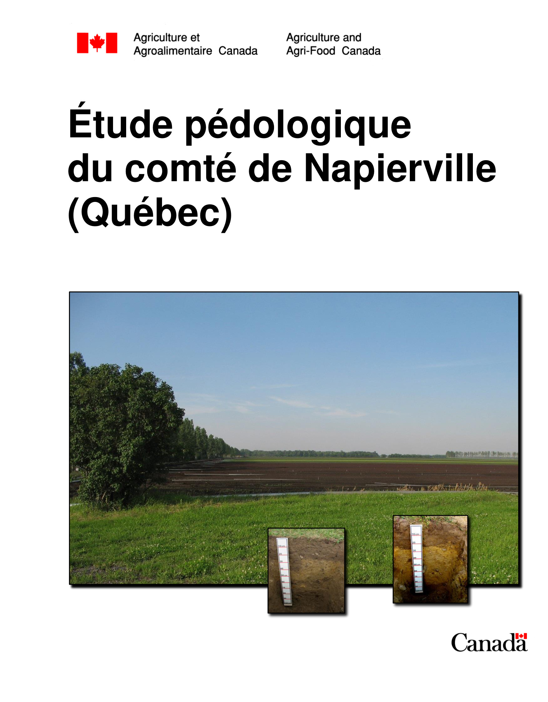
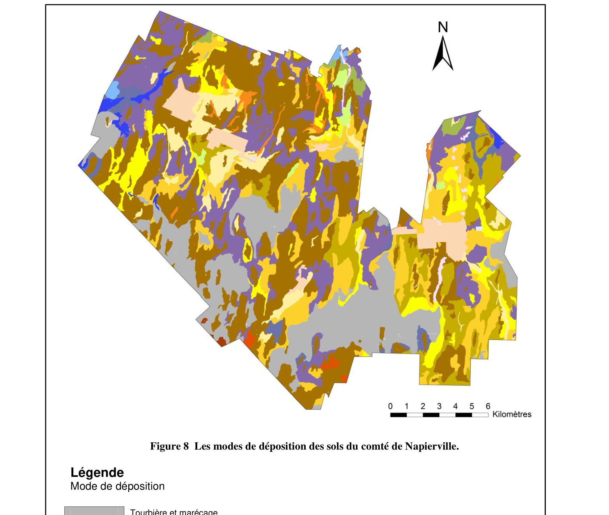
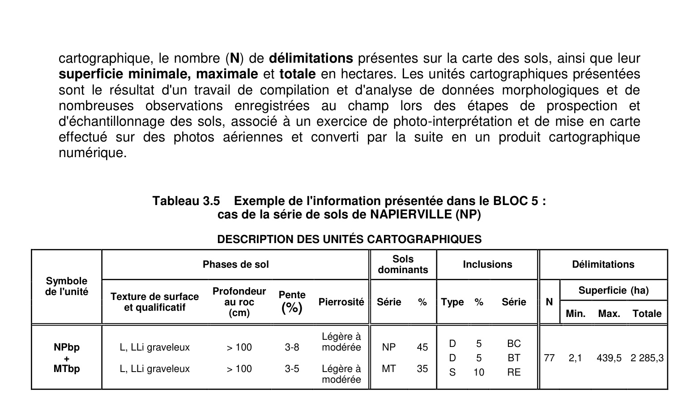
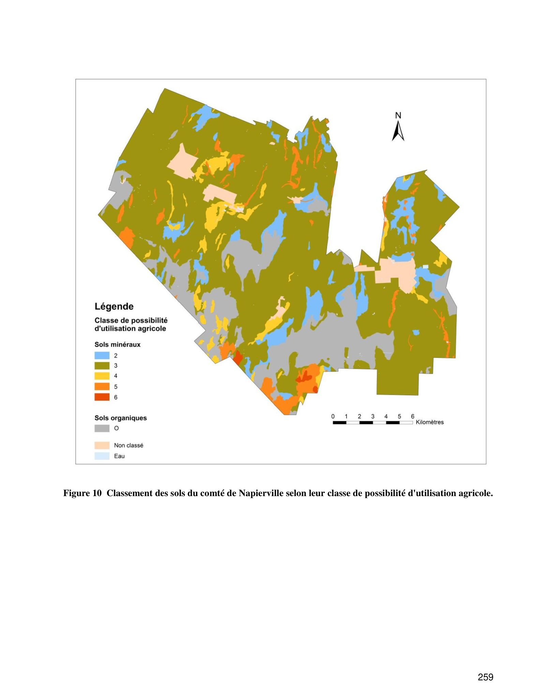

Identification & Caractéristiques Générales
La série Napierville se développe sur des dépôts meubles morainiques ou des matériaux glaciels de texture variée, reposant généralement sur un substratum minéral. Sur le plan géomorphologique, ces sols occupent des positions topographiques caractérisées par des pentes faibles à modérées, variant le plus souvent de 3 à 8 %. La topographie de surface est généralement unie à légèrement ondulée, ce qui influence directement les conditions de redistribution des eaux de surface et l'écoulement latéral au sein du paysage agronomique.
Le profil pédologique présente un solum dont la morphologie reflète des conditions de drainage variant de modéré à imparfait. La texture des horizons de surface est généralement de type limoneux à sablo-limoneux, reposant sur un sous-sol plus dense. On observe parfois la présence de cailloux dont le diamètre varie de 7,5 à 25 cm dans le substratum et le profil. La perméabilité est modérée, mais la présence d'une compacité accrue en profondeur peut restreindre temporairement le mouvement vertical de l'eau et induire des engorgements passagers au printemps ou lors de fortes précipitations. La réaction du sol est généralement acide à légèrement acide, nécessitant un suivi régulier du pH.
Sur le plan agronomique, les sols de la série Napierville conviennent à la production de grandes cultures, de cultures fourragères ainsi qu'à certaines productions maraîchères, selon les phases cartographiées. Les principales limitations agronomiques résident dans la présence de pierrosité superficielle ou subsuperficielle (phases légèrement à modérément pierreuses) et dans l'imperfection du drainage interne. L'installation d'un réseau de drainage souterrain et un travail du sol adapté sont requis pour optimiser la portance et la structure des horizons cultivés. Un chaulage correctif est également préconisé pour neutraliser l'acidité et maintenir la disponibilité des éléments nutritifs.
Classification Taxonomique & Environnement Pédologique
| Ordre Pédologique | Brunisolique |
|---|---|
| Grand Groupe (SCSS) | Brunisol mélanique |
| Sous-Groupe Taxonomique | Brunisol mélanique gleyifié |
| Famille Pédologique | Squelettique-loameuse, mixte sableux, alcalin (calcaire) |
| Mode de Dépôt Parental | Morainique |
| Classe de Drainage Naturel | Imparfaitement drainé |
| Régime Thermique & Humidité | Doux / Humide |
Description Morphologique du Profil Type
Séquence génétique des horizons pédologiques caractérisant le profil type représentatif de la série Napierville :
Profil forestier / boisé — Comté de Napierville
✓ Source : Comté de Napierville — Page 308Couleur Munsell : Non précisée
Structure & Consistance : Polyédrique à granulaire
Description morphologique : Argile (%)
Couleur Munsell : Non précisée
Structure & Consistance : Polyédrique à granulaire
Description morphologique : Limon (%)
Couleur Munsell : Non précisée
Structure & Consistance : Polyédrique à granulaire
Description morphologique : C org. (%)
Profils Photographiques & Planches de Terrain
Documents iconographiques, figures pédologiques et coupes de terrain documentées dans les mémoires d'inventaire pour de la série Napierville :




Propriétés Physico-Chimiques & Analyses de Laboratoire
| Col 1 | Col 2 | Col 3 | Col 4 | Col 5 | Col 6 | Col 7 | Col 8 | Col 9 | Col 10 | Col 11 |
|---|---|---|---|---|---|---|---|---|---|---|
| ALL | 5IT | - | - | - | - | - | - | - | - | - |
| AR | 6R | - | - | - | - | - | - | - | - | - |
| BA | O | F | F-M | F-M | E | M-E | F | - | M | F |
| BC | 3WD | F | F-M | F-M | M-E | M-E | F | F-M | F-M | F-M |
| BCh | 3WD | F | F | F-M | M-E | M-E | F | F-M | M | F-M |
| BCp | 3WD | F | F-M | F-M | M-E | M-E | F | F-M | F-M | F-M |
| BG | 3WD | F | M | F-M | M-E | M-E | M | M | M | F-M |
| BGp | 3WD | F | M | F-M | M-E | M-E | M | M | M | F-M |
| Blbp | 4FT | M | M | M-E | M-E | M-E | M | M | M | M-E |
| Blbq | 5PF | M-E | M | M | M-E | M-E | M | M-E | M-E | M-E |
| BTb | 3FW | F | M | M | M-E | M-E | F-M | M | M | F-M |
| BX | 3WF | F | M | M | M-E | M-E | F-M | F-M | M | F-M |
| BXh | 3WF | F | F | M | M-E | M-E | F-M | F-M | M | F-M |
| CCbp | 3DW | F-M | F-M | M | M-E | M-E | F-M | M | M | F-M |
| CO | O | F | F-M | F-M | E | M-E | F | - | M | F |
| CS | O | F | F | F-M | E | M | F | - | M-E | F |
| CY | 3WD | F | F-M | F | M-E | E | F | F-M | F-M | F |
| CYh | 3WD | F | F | F | M-E | E | F | F-M | M | F |
| DO | O | F | F-M | F-M | E | M-E | - | - | M-E | F |
| FAnbp | 6RS | F-M | M | M | M-E | F | - | - | M | E |
| GB | 3WD | F | F-M | F | M-E | M-E | F-M | F-M | F-M | F-M |
| Glb | 5ST | F | M-E | M-E | F-M | M | M | M-E | M-E | F-M |
| GLbp | 5ST | F-M | M-E | M-E | F-M | M | F-M | M | M | M-E |
| IS | O | F | F-M | F-M | E | M-E | - | - | M-E | F |
Particularités Régionales, Phases & Variantes Pédologiques
Déclinaisons régionales, faciès texturaux, phases d'érosion ou de pierrosité et variantes cartographiées par étude pour de la série Napierville :
| Étude Régionale | Symbole | Appellation / Phase / Variante | Différenciation avec la série type (Analyse pédologique) |
|---|---|---|---|
| Comté de Laprairie | NP2bp |
Napierville loam sableux 3-8 % de pente légèrement à modérément pierreux | Modalité modale de référence (type de base de la série). |
NP2gbp |
Napierville loam sableux graveleux 3-8 % de pente légèrement à modérément pierreux | Phase légèrement à modérément pierreuse (obstruction mécanique modérée). | |
NP3bp |
Napierville loam 3-8 % de pente légèrement à modérément pierreux | Phase légèrement à modérément pierreuse (obstruction mécanique modérée); Faciès loameux plus fin et équilibré que le loam sableux de référence (meilleure rétention en eau et nutriments). | |
NP3gbp |
Napierville loam graveleux 3-8 % de pente légèrement à modérément pierreux | Phase légèrement à modérément pierreuse (obstruction mécanique modérée); Faciès loameux plus fin et équilibré que le loam sableux de référence (meilleure rétention en eau et nutriments). | |
| Comté de Napierville | NPbp |
Napierville 3-8 % de pente légèrement à modérément pierreux | Phase légèrement à modérément pierreuse (obstruction mécanique modérée). |
| Comté de Saint-jean | NPbp |
Napierville loam sableux 3-8 % de pente légèrement à modérément pierreux | Phase légèrement à modérément pierreuse (obstruction mécanique modérée). |
| Comté de St-jean | NPV |
Napierville | Conforme à la série type de référence (caractéristiques texturales et drainage identiques). |
Distribution Pédo-Paysagère & Représentativité Cartographique (Couverture PPS 2026)
- Saint-Mathieu loam sableux 3-8 % de pente légèrement à modérément pierreux (SMA) — co-occurrente dans 172 polygone(s)
- Saint-Régis loam 3-8 % de pente légèrement à modérément pierreux (SRG) — co-occurrente dans 34 polygone(s)
- Grande-Ligne gravier sableux (GDG) — co-occurrente dans 28 polygone(s)
Aptitudes Agronomiques, Hydropédologie & Conservation des Sols
Indicateurs Hydropédologiques & Vulnérabilité à l'Érosion (BDHP 2026)
Interprétation BDHP : Potentiel de ruissellement modérément élevé. Faible taux d'infiltration, présence d'horizons ralentissant le drainage descendant.
Classement selon l'Inventaire des Terres du Canada (ITC / CLI) : Classe 2w.
- Potentiel agricole : Terroir adapté aux cultures régionales selon la texture dominante et la régie de drainage.
- Contraintes majeures : Imparfaitement drainé. Risque d'engorgement temporaire ou d'excès d'eau printanier.
- Gestion & Aménagement : Drainage souterrain ou superficiel préconisé sur les terres planes. Chaulage et apport organique régulier selon les bilans agronomiques.
- Cultures adaptées : Grandes cultures (maïs, soya, céréales), prairies fourragères et cultures maraîchères selon le contexte géomorphologique.